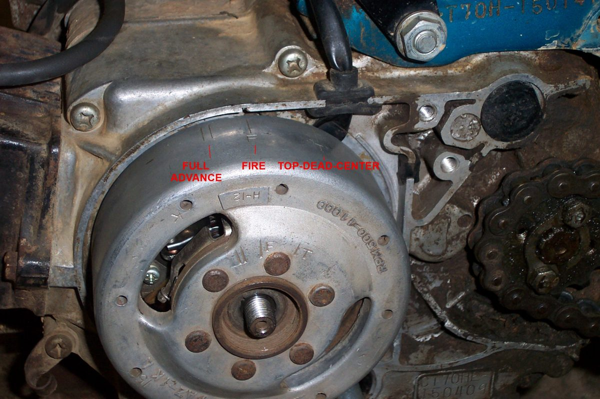
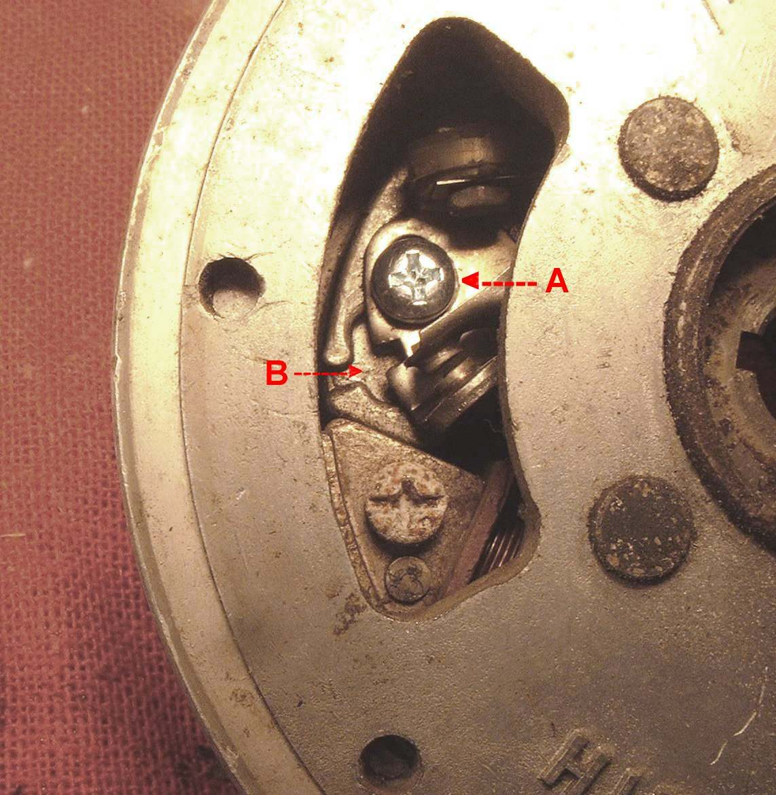

Flywheel magneto engines show ignition timing with marks on the flywheel and the crankcase. The marks line up when the points have just opened. Some engines have a fixed timing. Others have an automatic or manual spark advance that moves the spark earlier at speed. To set timing the advance must be held at the position the manual states, usually full advance or full retard. See the manual for your engine.
Safety
- Turn the engine by hand only. Never kick the engine over to turn it for timing, as a kickback can hurt your leg.
- Disconnect or earth the spark plug lead before turning the engine.
You need
- The workshop manual or marks chart for the engine.
- A way to find the points opening: Find the moment the contact points open.
- A marker if marks are worn.
Steps
- Find the marks. One mark is on the crankcase, others are on the flywheel rim. Clean them if they are faint.
- Work out the direction of rotation. If it is not known, push the kickstarter lever gently and watch which way the flywheel moves.
- Find out whether the engine has an advance unit. A centrifugal unit on the back of the flywheel moves out with speed. A hand lever on the flywheel gives manual advance.
- Lock the advance in the position the manual calls for. Some flywheels have a small hole that lines up with a hole in the advance unit. Put a small drill bit through both to hold it. With a lever, push it fully to the stop.
- Turn the engine in its normal direction until the points just open, using a meter, buzz box or paper.
- Check the moving flywheel mark against the crankcase mark. They must match at that moment.
- If they do not match, loosen the stator plate screws or the points screw and shift the setting a little at a time. Some stator plates have elongated holes for this. Others rely on the points adjusting groove.
- Tighten, turn the engine through, and check again.
Check your work
- Marks match at the instant the points open.
- The advance hold tool or lever is released before the engine is run.
- Points gap is still within the value in your bike's manual.
When to go to a workshop
- If the marks are missing or do not match the manual, a workshop can set the timing from piston position: Set points timing on a flywheel magneto.
- If the advance unit sticks or the springs are broken, it needs replacing.